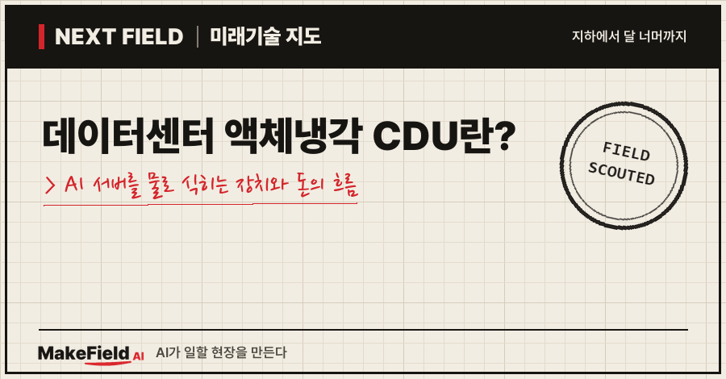
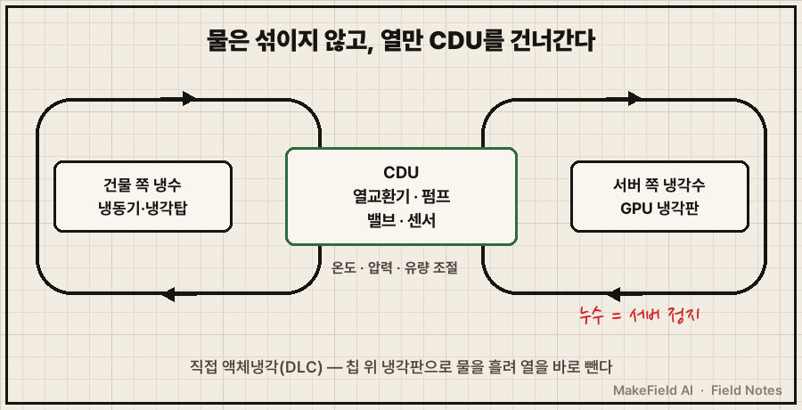
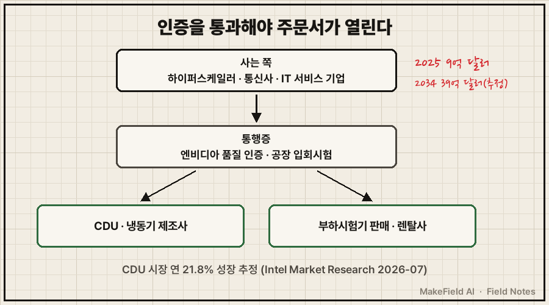
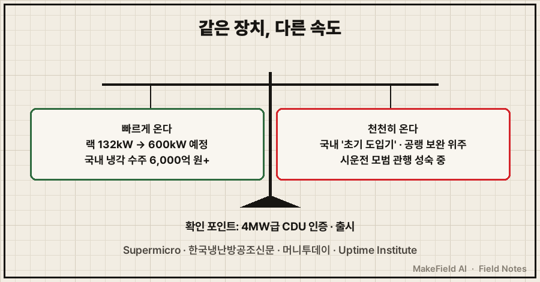

한 줄 요약: 액체냉각 CDU는 AI 서버에 흘려보낼 냉각수의 온도·압력·유량을 맞춰 나눠 주는 장치로, 엔비디아 GB200 NVL72 랙 하나가 132kW를 쓰는 시대(Supermicro 제품 사양)에 공기 대신 물로 열을 빼는 데이터센터의 '심장' 역할을 한다. 시장조사 기준으로 2025년 약 9억 달러인 CDU 시장은 2034년 약 39억 달러로 커질 것으로 추정됩니다(Intel Market Research, 2026-07, 추정).
데이터센터는 원래 선풍기처럼 차가운 공기를 불어 서버를 식혔어요. 그런데 AI 서버 랙 하나가 내는 열이 몇 년 만에 열 배 가까이 뛰면서, 바람으로는 따라잡기 어려워졌습니다. 2026년 10월 기준으로, 이 자리를 채우는 CDU가 무엇이고 그 주변에서 돈이 어떻게 도는지 쉽게 풀어볼게요.
1. 액체냉각 CDU란 무엇인가요
CDU(냉각수 분배 장치)란 건물 쪽 냉수와 서버 쪽 냉각수를 열교환기로 나누고, 펌프·밸브로 온도·압력·유량을 맞춰 서버마다 나눠 주는 장치다. 서버 안을 도는 물과 건물 냉동기에서 오는 물이 섞이지 않게 중간에서 '열만' 주고받게 해 줘요.
💡 CDU(Coolant Distribution Unit, 냉각수 분배 장치) — 아파트 각 세대에 난방수를 나눠 주는 '분배기'에 열교환기와 펌프를 붙인 것. 서버 쪽 물과 건물 쪽 물을 섞지 않고 열만 넘긴다.
CDU가 쓰이는 대표 방식이 직접 액체냉각이에요.
💡 DLC(Direct Liquid Cooling, 직접 액체냉각) — GPU 칩 위에 금속 냉각판을 붙이고 그 안으로 물을 흘려 열을 바로 빼내는 방식. PC로 치면 공랭 쿨러 대신 '수냉 쿨러'.

CDU는 놓는 위치에 따라 크기가 달라요. 서버 랙 안에 들어가는 작은 것부터, 랙 여러 줄을 한 번에 맡는 줄 단위(in-row)·바닥 설치형까지 있습니다. 예를 들어 Supermicro는 GB200 NVL72 랙용으로 1.3MW급 줄 단위 CDU를 선택지로 제시해요(Supermicro 제품 사양).
2. 왜 지금 액체냉각이 뜨나요
AI 서버 랙 하나가 쓰는 전력이 공기로 식힐 수 있는 수준을 넘었기 때문이다. 숫자로 보면 변화가 분명해요.
| 시점 | 랙 1개 전력 | 출처 |
|---|---|---|
| 2017년 표준 서버 랙 | 약 15kW | 한국냉난방공조신문(2026-08) |
| 기존 데이터센터 일반 랙 | 10~20kW | 한국냉난방공조신문(2026-08) |
| 엔비디아 GB200 NVL72 랙 | 132kW | Supermicro 제품 사양 |
| 2027년 하반기 예정 'Kyber' 랙 | 약 600kW(예정) | 한국냉난방공조신문(2026-08) |
💡 랙(Rack) — 서버 여러 대를 층층이 꽂아 두는 철제 선반. 데이터센터의 기본 단위.
전기를 쓴 만큼 열이 나오니, 랙 전력이 10배면 빼내야 할 열도 10배예요. 업계 기사도 AI 랙 전력밀도가 40~130kW를 넘는 지금 수준은 공랭식만으로는 "감당이 어려운 수준"이라고 평가합니다(한국냉난방공조신문, 2026-08). 물은 공기보다 열을 훨씬 잘 실어 나르기 때문에, 전문가들은 전력 사용을 30~60% 낮출 수 있다고 설명해요(MTN, 2026-07, 업계 설명).
💡 PUE(전력 사용 효율) — 데이터센터 전체 전력을 서버 전력으로 나눈 값. 1에 가까울수록 냉방 등 '곁가지'에 쓰는 전기가 적다. 업계는 공랭식을 통상 1.5, CDU 기반 액체냉각은 1.05 이하까지로 설명한다(한국냉난방공조신문, 2026-08, 업계 주장).
수요 신호도 숫자로 나와요. Dell'Oro Group은 데이터센터 직접 액체냉각 시장이 2025년 2분기에 전년 대비 156% 성장했다고 집계했습니다(한국냉난방공조신문 2026-08 인용).
3. 돈의 흐름 — 누가 사고, 누가 파나요
사는 쪽은 데이터센터를 짓는 빅테크·통신사·IT 서비스 기업이고, 파는 쪽은 냉각·전력 설비 제조사다. 그 사이에 엔비디아 인증과 시험 장비가 '통행증'처럼 끼어 있어요.

💡 하이퍼스케일러 — 구글·MS·아마존처럼 초대형 데이터센터를 직접 짓는 회사.
시장 규모는 조사기관마다 편차가 커서 범위로 보는 게 안전해요.
| 구분 | 규모 | 출처 |
|---|---|---|
| 액체냉각 CDU 시장 | 2025년 9억 달러 → 2034년 39억 달러(연 21.8%) | Intel Market Research(2026-07, 추정) |
| 2026년 CDU 시장 | 10억~19억 달러(기관별 편차), 연 18~21% | 한국냉난방공조신문(2026-08, 추정) |
| 직접 액체냉각 시장 | 2029년 약 60억 달러 | Dell'Oro Group(한국냉난방공조신문 2026-08 인용, 추정) |
파는 쪽에서 눈에 띄는 움직임은 이래요.
- LG전자: 600kW급 CDU로 2026년 7월 엔비디아 최종 품질 인증을 받았어요. 국내 기업 첫 사례이고, 냉각수 온도를 ±0.25°C 안에서 제어합니다(MTN, 2026-07). 상반기 AI 데이터센터 냉각 수주가 6,000억 원을 넘었고, 1MW급 인증 진행·1.4MW급 개발 마무리·4MW급 연내 출시를 목표로 연말까지 수조 원 추가 수주를 노린다고 밝혔어요(머니투데이, 2026-09).
- 슈나이더 일렉트릭: 국내에 MW급 CDU를 내놓았고 5MW급 출시도 계획 중이에요. 냉동기·배관까지 묶어 파는 전략을 내세웁니다(한국냉난방공조신문, 2026-08).
- 글로벌 주요 업체(예시): Vertiv, Schneider Electric, Eaton, nVent, Nidec, CoolIT Systems, Delta Electronics 등이 조사 보고서에 이름을 올렸어요(Intel Market Research, 2026-07).
💡 엔비디아 인증 — AI 칩 1위 엔비디아가 자기 서버 랙에 써도 된다고 품질을 보증해 주는 절차. 대부분의 AI 데이터센터가 엔비디아 랙을 쓰기 때문에 사실상 입장권 역할을 한다(MTN, 2026-07).
사는 쪽의 국내 사례로는 삼성SDS가 있어요. 2026년 1월 경북 구미에 60MW급 AI 데이터센터를 짓는 MOU를 맺었고, GPU 서버는 냉수로 직접 식히고 네트워크·저장 장비는 공기로 식히는 하이브리드 방식을 쓰며 2029년 3월 가동이 목표입니다(삼성SDS, 2026-01).
※ 위 기업명은 산업 구조를 설명하기 위한 예시입니다. 특정 종목의 매수·매도를 권하는 글이 아닙니다.
4. 숨은 병목 — 물을 처음 켜는 '시운전'
장비를 사도 끝이 아니다. 액체냉각은 처음 물을 돌려 보는 시운전 단계마다 새로운 어려움이 생긴다. 데이터센터 신뢰성 평가 기관 업타임 인스티튜트는 "직접 액체냉각은 시운전의 모든 단계에서 어려움을 만든다"며 그 중심에 CDU가 있고, 관련 "모범 관행은 아직 성숙 중"이라고 진단했어요(Uptime Institute, 2026-01).
💡 시운전 — 새 설비를 실제로 켜서 설계대로 돌아가는지 단계별로 확인하는 과정. 새 집 입주 전 수도·보일러를 다 틀어 보는 것과 같다.
이유 중 하나는 공급사가 새로 쏟아졌다는 점이에요. 업타임은 일부 CDU 제조사가 "CDU를 내놓기 전에는 데이터센터에 제품을 판 적이 없었다"고 짚고, 그래서 실제 조건에서 성능을 확인하는 공장 입회시험이 "결정적"이라고 강조했습니다(Uptime Institute, 2026-01).
💡 FWT(Factory Witness Test, 공장 입회시험) — 구매자가 제조 공장에 직접 가서 지켜보는 가운데 하는 출하 전 시험.
시험 장비 쪽은 빠르게 채워지고 있어요. 진짜 서버 대신 같은 양의 열을 내는 액냉 부하시험기가 2026년 들어 잇달아 나왔습니다.
💡 부하시험기(Load Bank) — 진짜 서버 대신 전기를 먹고 같은 양의 열을 내는 '가짜 서버'. 비싼 GPU를 꽂기 전에 냉각이 버티는지 미리 확인한다.
| 업체(예시) | 제품 | 출처 |
|---|---|---|
| Crestchic | 600kW 액냉 부하시험기, 출입수 온도차(ΔT) ±0.5°C 제어, 8개국 판매·렌탈 | Data Centre News(2026-03) |
| Trane | 575~640kW 렌탈, 최대 유량 300GPM | Trane 공식 페이지 |
| Aggreko | 600kW, 1·2차 냉각 루프와 CDU 시험 | Aggreko 공식 페이지 |
💡 ΔT(델타 T) — 들어가는 물과 나오는 물의 온도 차. 열을 얼마나 빼냈는지 보여 주는 숫자.
정리하면, 시험 '도구'는 몇 달 사이에 시장에 깔렸지만 그 도구로 무엇을 어떤 순서로 확인할지에 대한 업계 표준 절차는 아직 다듬어지는 중이에요(Uptime Institute 2026-01 진단 기준, 추정).
5. 언제 오나요, 그리고 한계
고밀도 AI 구역부터 액체냉각이 들어가고, 공랭식을 한 번에 갈아엎지는 않는다는 것이 업계의 중론이다. 양쪽 근거를 같이 보면 이래요.

- 빠르게 온다는 근거: 랙 전력이 132kW에서 600kW급(예정)으로 올라가는 로드맵이 나와 있고(Supermicro·한국냉난방공조신문), 국내 대기업 한 곳의 상반기 냉각 수주만 6,000억 원을 넘었어요(머니투데이, 2026-09).
- 천천히 온다는 근거: 국내 리퀴드쿨링은 아직 "초기 도입기"로 평가되고(한국냉난방공조신문, 2026-08), CDU는 공랭식을 전면 대체하기보다 고열 구간을 보완하는 방식으로 쓰일 전망이에요(MTN, 2026-07). 시운전 모범 관행도 아직 성숙 중입니다(Uptime Institute, 2026-01).
- 위험 요소: 서버 바로 옆으로 물이 흐르는 구조라 누수 감지와 펌프 이중화가 핵심이에요. LG전자 CDU도 누수 감지, 펌프 장애 시 예비 장치 전환 시험을 내세웠습니다(데일리안, 2026-07).
💡 펌프 이중화 — 펌프를 두 대 이상 두고, 하나가 멈추면 다른 하나가 즉시 이어받게 하는 구성. 냉각이 끊기면 서버가 몇 분 안에 멈출 수 있어서 필수다.
자주 묻는 질문
Q. 액체냉각이면 서버를 물에 담그는 건가요?
이 글에서 다룬 직접 액체냉각(DLC)은 칩 위 냉각판 안으로만 물을 흘리는 방식이에요. 서버 전체를 특수 액체에 담그는 '침지 냉각'은 다른 방식입니다.
Q. CDU는 얼마나 큰가요?
랙 안에 들어가는 소형부터 MW급 바닥 설치형까지 있어요. 국내에서는 600kW급 엔비디아 인증 제품이 나왔고(MTN, 2026-07), 4MW·5MW급 출시 계획도 발표됐습니다(머니투데이 2026-09, 한국냉난방공조신문 2026-08).
Q. 기존 데이터센터도 액체냉각으로 바꿔야 하나요?
전부 바꾸는 흐름은 아니에요. 고열 GPU 구역만 물로 식히고 나머지는 공기로 식히는 하이브리드가 현실적인 경로로 제시됩니다(삼성SDS 2026-01, MTN 2026-07).
오늘의 용어 정리
- CDU(냉각수 분배 장치) — 서버 쪽 냉각수의 온도·압력·유량을 맞춰 나눠 주는 액체냉각의 심장
- DLC(직접 액체냉각) — 칩 위 냉각판에 물을 흘려 열을 바로 빼는 방식
- 랙 — 서버를 층층이 꽂는 철제 선반, 데이터센터의 기본 단위
- PUE — 데이터센터 전체 전력 ÷ 서버 전력, 1에 가까울수록 효율적
- 하이퍼스케일러 — 초대형 데이터센터를 직접 짓는 빅테크
- 엔비디아 인증 — 엔비디아 서버 랙에 써도 된다는 품질 보증
- 시운전 — 새 설비를 켜서 설계대로 도는지 확인하는 과정
- FWT(공장 입회시험) — 구매자가 공장에서 지켜보는 출하 전 시험
- 부하시험기 — 서버 대신 열을 내는 '가짜 서버'
- ΔT(델타 T) — 들어가고 나오는 물의 온도 차
- 펌프 이중화 — 펌프 하나가 멈추면 다른 펌프가 이어받는 구성
지난 Next Field에서 데이터센터 전원이 800V 직류로 바뀌는 흐름과 변압기 병목을 다뤘다면, 이번엔 같은 AI 랙이 내는 열을 어떻게 빼내는지의 이야기였어요. 전기와 물, 둘 중 어느 쪽이 먼저 AI 데이터센터의 발목을 잡을 거라고 보시나요?
출처
[1] Uptime Institute(2026-01) — 직접 액체냉각 시운전의 어려움, CDU가 중심, 모범 관행 성숙 중, 신규 CDU 제조사와 공장 입회시험의 중요성
→ https://intelligence.uptimeinstitute.com/resource/coolant-distribution-units-can-complicate-commissioning
[2] Supermicro 제품 사양 — GB200 NVL72 랙 총 전력 132kW, 직접 액체냉각, 1.3MW급 줄 단위 CDU 선택지
→ https://www.supermicro.com/en/products/rack/srs-gb200-nvl72
[3] 한국냉난방공조신문(2026-08) — 랙 전력 15kW→132kW→600kW 예정, CDU 시장 10억~19억 달러·연 18~21%, Dell'Oro 직접 액체냉각 성장률·2029 전망, PUE 비교
→ https://kharn.kr/news/article.html?no=31475
[4] 한국냉난방공조신문(2026-08) — 슈나이더 일렉트릭 MW급 CDU·5MW급 계획, 랙당 전력밀도 변화, 국내 초기 도입기 평가
→ https://www.kharn.kr/news/article.html?no=31471
[5] Intel Market Research(2026-07) — 액체냉각 CDU 시장 9억→39억 달러(연 21.8%), 주요 업체 목록
→ https://www.intelmarketresearch.com/liquid-cooled-cdus-for-data-centers-market-60432
[6] MTN(2026-07) — LG전자 600kW급 CDU 엔비디아 인증, ±0.25°C 제어, 전력 사용 30~60% 절감 설명, 공랭 보완 전망
→ https://news.mtn.co.kr/news-detail/2026072710045585185
[7] 데일리안(2026-07) — LG전자 CDU 누수 감지·예비 장치 전환 시험·통합관제 연동
→ https://www.dailian.co.kr/news/view/1671051/
[8] 머니투데이(2026-09) — LG전자 상반기 냉각 수주 6,000억 원+, 1MW 인증 진행·1.4MW 개발·4MW 연내 출시 목표
→ https://www.mt.co.kr/industry/2026/09/14/2026091416023649704
[9] 삼성SDS(2026-01) — 구미 60MW AI 데이터센터 MOU, 공랭+액냉 하이브리드, 2029년 3월 가동 목표
→ https://www.samsungsds.com/us/news/gumi-260112.html
[10] Data Centre News(2026-03) — Crestchic 600kW 액냉 부하시험기, ΔT ±0.5°C, 8개국 판매·렌탈
→ https://datacentrenews.uk/story/crestchic-debuts-600kw-liquid-cooled-data-centre-load-bank
[11] Trane 공식 페이지 — 575~640kW 액냉 부하시험기 렌탈, 최대 유량 300GPM
→ https://www.trane.com/commercial/north-america/us/en/services/rentals/rental-equipment/liquid-cooled-load-banks.html
[12] Aggreko 공식 페이지 — 600kW 액냉 부하시험기, 1·2차 냉각 루프와 CDU 시험
→ https://www.aggreko.com/en-gb/products/load-banks/liquid-cooled